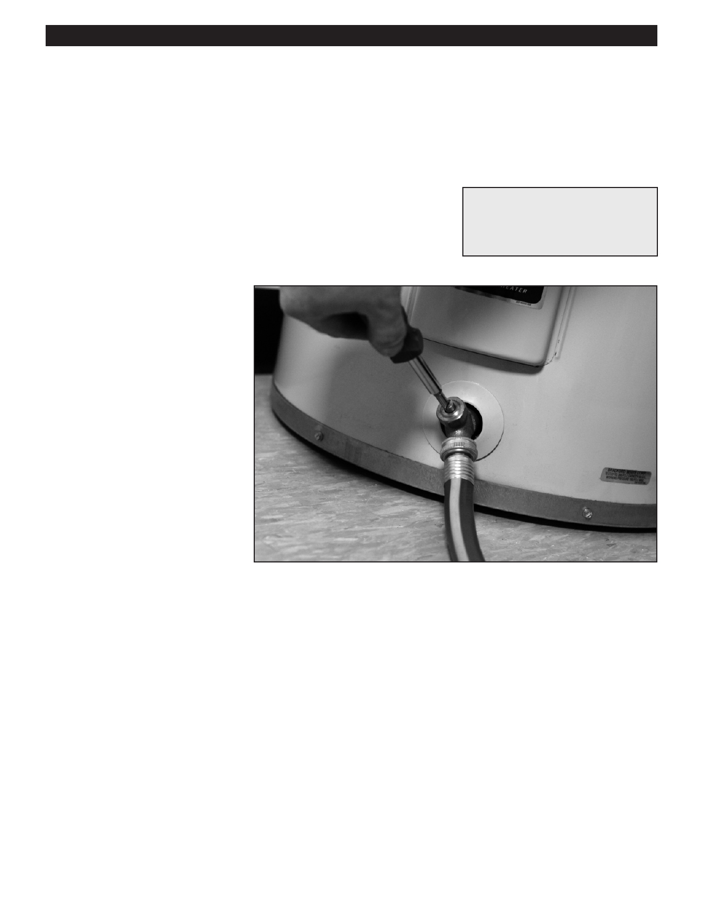

PA RT I C I PA N T R E S O U R C E G U I D E
Draining Water from a Water Heater Tank
Sediment can built up in electric and gas water heaters, and this can prevent the unit
from operating at peak efficiency. Draining three to five gallons of water from the tank
can remove most of the sediment:
Safety
Tools and Materials Needed
Wear eye and hand protection.
Bucket
Hose (optional)
How-to-Steps
1. Place a bucket underneath the
drain valve. (A hose may also be
attached to the drain valve.)
2. Open the drain valve and remove
three to five gallons of water.
3. Close the drain valve.
Notes:
85